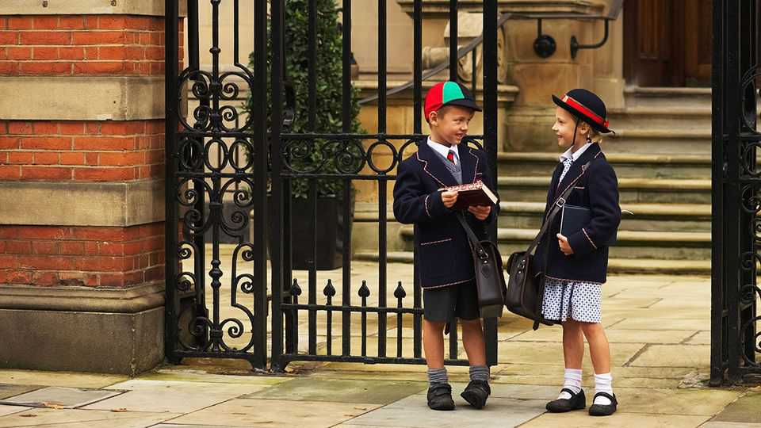

The impact of taxing British private-school fees starts to show
But the policy will probably raise money, nonetheless
June 4th 2026

MORE THAN 500 children attend St Joseph’s College, a private school in Reading that prides itself on providing the “best value” education in its area. In mid-May it announced that, unless it can find a big cash injection, it will close in July. The school has blamed years of rising costs—worsened by the Labour government’s decision to make private schools start paying full business rates and to levy value-added tax on their fees. Martyn Cook is among hundreds of parents now racing to find new schools for their children; having spent 20 years as an army officer, he has experience getting out of scrapes. “But when you have a problem and your kids are upset, emotionally it’s very hard.”
Eighteen months on from Labour’s reforms, many private schools are finding things hard. Government data released on June 4th showed pupil numbers in mainstream independent schools in England are down by 5% (about 27,000 pupils) this year. That follows a 2.8% fall in 2024-25, the first year after Labour came to power. The declines have come mainly from fewer children joining private schools, rather than from an exodus of existing pupils. They have been most pronounced outside London—perhaps because it is in poorer regions that parents have been stretching furthest to pay for private lessons.
Exactly how far these declines have been driven by Labour’s policies is open to question. Some of it is doubtless because the total number of school-age children in Britain is dropping (by around 1.2% in England last year). And well before Labour arrived in government, rising living costs were forcing many parents to think hard about their outgoings. But even taking that into account, it seems the reforms are having a greater impact on enrolment than was predicted. Back in 2024 the government forecast that imposing VAT would leave the sector with 6% fewer pupils by the 2030s, compared with what would otherwise have happened. It may drive more shrinkage than that.
A hot debate is whether these declines have begun pushing a lot of schools into bankruptcy. The government insists not: in fact, it says, more independent schools have opened than closed since its VAT policy was enacted. That is true, but misleading. The new openings are mostly of small “special” schools serving children with disabilities, for which there is booming demand. Fees for pupils in these institutions are largely paid by local authorities (which can claim back the VAT).
Focus only on “mainstream” private schools, and a murkier picture emerges. People are still opening these (seven of the 18 to open since the start of 2025 list their religious ethos as “Islamic”). But the long-term trend is consolidation: between 2016 and 2025 the number of mainstream schools in England fell by 11%, while the number of pupils educated in them dropped by only a bit. Nearly 60 closed in 2025 (out of 1,600). That was more than in 2024, but about the same as in 2023, before Labour was elected. Tracking closures that have been announced or threatened so far this year does not—yet—suggest that 2026 is certain to be vastly worse.

Yet one recent change is very striking. The average size of the schools that go under seems to be jumping up. It has long been weeny schools, with as few as 50 pupils, that most often fail. But since January 2025 at least a dozen schools with more than 200 pupils have closed or announced that they are likely to do so—about as many as in the eight years that came before. If St Joseph’s does close, it will be one of the biggest to run aground for a decade. As a result, the number of children being affected by private-school closures is growing (see chart). And private schools are leaving bigger holes in local communities when they go.
Do any of these trends imply that whacking private schools with VAT will not after all raise much money for government ones (Labour’s stated motivation for the policy)? That depends on whose modelling you trust. Perhaps the most pessimistic forecast comes from the Adam Smith Institute, a free-market think-tank. It reckons the policy would need to shrink private schools by only 10-15% for it to end up costing more money than it raises (both because of the price of enrolling fugitives in the state sector and because of wider impacts on the economy). Yet this relies on some bearish assumptions—for example, that lots of people laid off by retrenching schools will struggle to find new work. And that parents whose children have been priced out of private schools will choose to work many fewer hours in future, now that they need not stretch to pay fees.
Forecasts from the Institute for Financial Studies, another think-tank, are more optimistic. It has long argued that the policy will generate decent revenues regardless of how many pupils flee to government schools. The money their parents save will probably be spent on other goods and services that also bear VAT, it believes (this might be true even if it is stashed away or invested for a few years first). And it points out that the price of accommodating more pupils in the state sector might be lower even than it is calculating, given that demographic decline is already creating spare capacity in classrooms.
There is a catch, all the same. It is that, even in the best case, taxing private lessons stands to raise sums amounting to only about 2% of what the government is already spending on state schools each year. For people who see independent schools as poisonous purveyors of privilege, this is a detail; shrinking the sector is the point. For everyone else, it looks like the government is causing a lot of hassle and heartache for a piddling sum.■
For more expert analysis of the biggest stories in Britain, sign up to Blighty, our weekly subscriber-only newsletter.